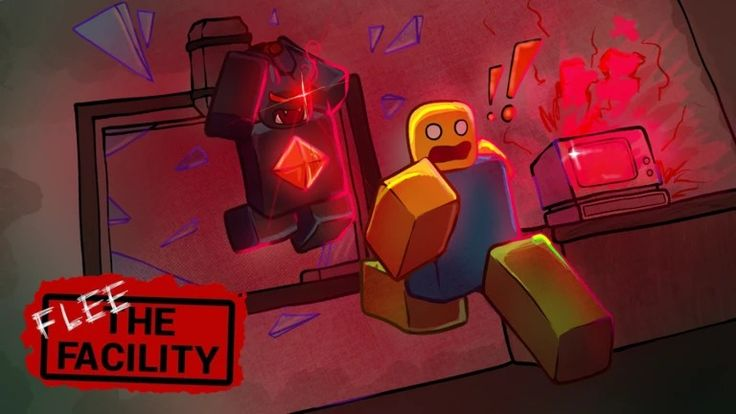
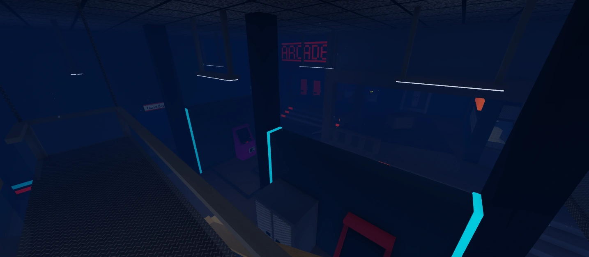

Flee the Facility é um jogo de terror assimétrico extremamente popular no Roblox, criado por A.W. Apps. O jogo foi inspirado pela mecânica de jogos como Dead by Daylight.
COMO JOGAR
Como Jogar de Sobrevivente
• Seu objetivo é hackear os computadores e fugir pelas portas de saída.
• Aperte o botão no tempo certo: durante o hack, um círculo aparecerá.
• Corra ou esconda-se. Salve seus amigos se alguém for preso.
• Abra as portas: quando todos os computadores forem hackeados, corra para uma das portas.
Como Jogar de Fera
• Seu objetivo é capturar todos os sobreviventes antes que eles consigam escapar.
• Siga os rastros e fique atento aos erros de hack.
• Nocauteie os sobreviventes e leve-os até um tubo de congelamento.
• Prenda nos tubos e tente impedir que os outros jogadores libertem o sobrevivente.
Como hackear
Para hackear,encontre um computador espalhado pelo mapa e interaja com ele. Durante o hack, fique atento ao momento certo para apertar o botão. Se errar, o computador fará um alerta e poderá revelar sua localização para a Fera. Continue hackeando até completar o computador. Depois que computadores suficientes forem hackeados, as portas de saída poderão ser abertas.
Como escapar
Quando os computadores necessários forem hackeados, procure uma das portas de saída. Interaja com ela para começar a abri-la e fique atento à Fera enquanto espera. Quando a porta estiver totalmente aberta, atravesse para escapar da instalação. Se houver outros sobreviventes presos, você também pode tentar ajudá-los antes de fugir.Controles
Celula/Tablet
PC
PRINCIPAIS MAPAS

Flee Facility

Airport

Homestead

Arcade

Shopping
DICAS
- Fique atento à Fera: sempre observe o ambiente e escute os sons para saber se ela está por perto.
- Use o mapa: corredores, salas e obstáculos podem ajudar a escapar da Fera.
- Ajude seus amigos: se alguém estiver no tubo de congelamento, tente resgatá-lo quando for seguro.
- Cuidado nas saídas: depois que os computadores forem hackeados, a Fera provavelmente ficará de olho nas portas.
- Evite chamar atenção: errar um hack pode alertar a Fera sobre sua localização.
- Conheça os mapas: saber onde ficam computadores, portas e caminhos de fuga faz uma diferença enorme.
- Não entre em pânico: se a Fera aparecer, pense antes de sair correndo feito um louco. Use o ambiente a seu favor.
SOBRE O SITE
Este site foi feito para ensinar o básico de Flee the Facility para quem está começando.